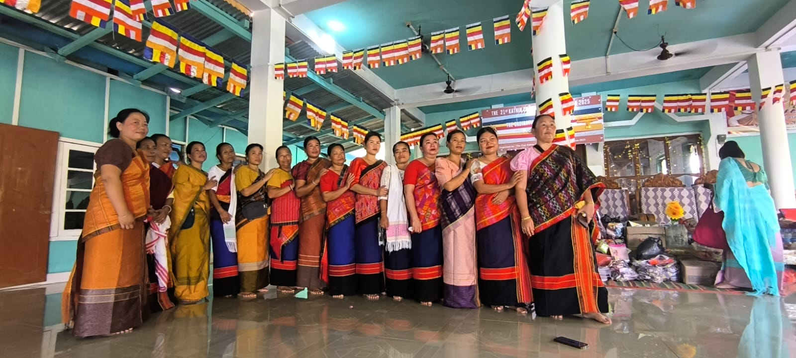

Who Are the Chakmas?
The Chakma are an ethnic tribal community of Buddhist heritage with a distinct culture, language, and history. They are one of the indigenous tribal groups in the Indian subcontinent, traditionally inhabiting the Chittagong Hill Tracts of Bangladesh and parts of Northeast India, including Mizoram, Tripura, Arunachal Pradesh, and Assam.
In Mizoram, Chakmas form a recognized Scheduled Tribe and make up around 8–9% of the state’s population. They are most heavily concentrated in the south of the state, along the border with Bangladesh.
Join Our Field Team
Primary Challenges Faced
The Chakma community in Mizoram continues to navigate systemic disparities that limit growth. Explore the core challenges below.
Educational Disadvantage
Despite constitutional protections, the Chakma community in Mizoram continues to experience wide gaps in educational access and outcomes:
- Literacy Disparity: Literacy rates among Chakmas are significantly lower than the state average; historically at around 45% compared to Mizoram’s literacy rate of almost 90%.
- School Scarcity: Many Chakma villages lack quality schools beyond primary levels, forcing children to travel long distances or drop out.
- Professional Barriers: Reports indicate discrimination in higher education access, including alleged barriers to professional seats such as medical education for Chakma students.

Economic Underdevelopment
Economic mobility and stability remain highly restricted in remote and border settlements:
- Subsistence Agriculture: Most Chakma families in Mizoram rely on traditional shifting cultivation (jhum), which yields low productivity and limited economic stability.
- Lack of Modern Tools: Absence of reliable irrigation, farming tools, and diversified crops compounds food security risks.
- Market Isolation: The absence of infrastructure such as roads, electricity, and market access further limits economic opportunities and contributes to high levels of poverty.

Infrastructure Deficits
Many Chakma-dominated areas in Southern Mizoram suffer from chronic underdevelopment:
- Poor Connectivity: Inadequate road layouts isolate hilltop communities from emergency support and markets.
- Energy Deficit: Deep forest villages have limited or no reliable electricity.
- Water Scarcity: Clean water and sanitary systems are virtually non-existent, forcing households to spend hours carrying water up cliffs.

Social & Institutional Bias
Although recognized under the Sixth Schedule with the Chakma Autonomous District Council (CADC), bias persists:
- Systemic Disadvantages: Institutional discrimination and societal bias have been reported in language-based job criteria and resource allocation.
- Identity Gaps: Some community members are treated as outsiders or non-indigenous by dominant groups, affecting access to services and citizenship rights.

Health & Social Services Gap
Remote border settlements face severe deficits in basic medical safety and treatment access:
- Remoteness of Care: With limited local healthcare infrastructure, many Chakma communities must travel long distances for medical care.
- High Maternal Risks: Maternal and child health services are often inadequate, leaving mothers and infants vulnerable.
- Slow Emergencies: Emergency response is slow or non-existent due to poor transport and mountain roads.

Supporting The Community
GCF funds three vital operational branches designed in alignment with village needs.
Chakma Script Schools
GCF finances local village tutors to run after-school classes, ensuring children learn to read, write, and preserve the traditional Chakma script. We publish and distribute free textbooks written in the script, ensuring it remains an active, living alphabet.
- 12 Active village script centers
- 450+ Active young pupils enrolled
- Free textbook printing and supply distribution
Gravity Aqueducts
Isolated hilltop villages struggle with clean water access. GCF engineers construct mountain-source spring capture boxes and run miles of durable UV-resistant PVC pipelines down into central village taps. The systems operate entirely on gravity, requiring zero electricity.
- Gravity-fed design (zero power needed)
- Spring filtration sand/gravel beds
- Trained local maintenance plumber committees
Mobile Care Clinics
We support mobile health campaigns that travel to deep forest settlements. GCF stocks clinics with diagnostic testing kits for malaria, essential rehydration formulas, vitamins, and primary pediatric medicines to treat seasonal fevers.
- Bi-weekly health camps in remote sectors
- Malaria rapid testing & treatment kits
- First-aid and sanitation training for mothers
Ajhā Script Literacy Drive
The Ajhā script is the historical written form of the Chakma language. During the late 20th century, school systems shifted completely to national alphabets, placing the native script in danger of extinction. GCF believes cultural heritage is as critical as clean water.
Textbook Publishing
We work with indigenous language experts to compile and print colorful, engaging workbooks specifically for young learners.
Teacher Stipends
We pay monthly stipends to 15 local educators who run community learning centers, keeping the language alive within the family structure.

Voices of Heritage: Chakma Vocabulary
Click on the cards below to explore common words in the traditional Chakma language and see how GCF supports them.
Maju
/mah-joo/ Click to FlipMaju
A warm traditional greeting meaning "Welcome" or "Hello". It reflects the open-hearted hospitality of the Chakma people.
HospitalityPharā
/pha-rah/ Click to FlipPharā
Means "Village". GCF is actively working in 8 remote villages (Pharās) in the Sajek Valley region to build water grids and schools.
CommunityIzor
/ee-zor/ Click to FlipIzor
Means "Traditional Script" or "Writing". GCF supports this by distributing free workbooks written in the Ajhā alphabet.
EducationAlo
/ah-loh/ Click to FlipAlo
Means "Light" or "Knowledge". Reflects the educational empowerment brought to over 450 Chakma children via script schools.
EmpowermentKada
/kah-dah/ Click to FlipKada
Means "Water". GCF engineers gravity-fed aqueducts that bring fresh, clean spring water directly to village centers.
Water GridAjhā Script Alphabet Explorer
Learn how the letters of the traditional Ajhā script are constructed. Click on a character to view details and watch it write itself stroke-by-stroke.
Interactive Guidelines
Alon
The letter 'Alon' represents the starting vowel sound of the alphabet, equivalent to the English letter 'A' or 'Ah'. It is characterized by a central curving loop that begins at the left axis and finishes with a soft tail.
Word Association
Alo - meaning "Light" or "Education". In GCF script centers, children learn to write 'Alon' as their first step towards literacy.
Voices from Sajek Valley
Why Mr. Sudip Chakma’s Work Matters
Living within this context of educational exclusion, economic hardship, infrastructural deficits, and social marginalization, Mr. Sudip Chakma was deeply moved to take action:
- Firsthand Experience: Having experienced interrupted education himself, he understood firsthand how lack of opportunity can shape a person’s future.
- Relentless Belief: His early teaching work and countless late nights spent connecting with supporters reflected a relentless belief that education and compassion are catalysts for change.
- Devoted Life: Observing that many Chakma children lacked access to quality schools and supportive learning environments, he devoted his life to creating alternative pathways for learning, dignity, and social upliftment.

GCF's Core Mission & Solutions
Quality Education
Providing high-quality instruction for children who have historically been denied equitable educational opportunities.
Safe, Inclusive Spaces
Creating safe, welcoming environments that nurture potential, confidence, and self-worth.
Community Solutions
Implementing grassroots, community-centered solutions that empower both children and families for future success.
Mr. Chakma’s work directly challenges the cycle of marginalization by placing education, care, and opportunity at the center of development.
Summary of the Cause
"The Chakma community of Mizoram faces layered challenges — educational, economic, social, and infrastructural — rooted in historical marginalization and ongoing disparities. Through Global Compassion Foundation, Mr. Sudip Chakma is addressing these barriers with compassion, vision, and on-the-ground action, helping children and families unlock pathways to a better future."
Calculate Your Donation Impact
Adjust the donation amount below to see exactly what supplies will be deployed to the Sajek Valley projects.
Script Schools & Literacy
Textbooks Printed
Traditional Ajhā script workbooks published and distributed free to young pupils.
Weeks of School Funding
Covers full stipends for village language tutors to conduct after-school learning.